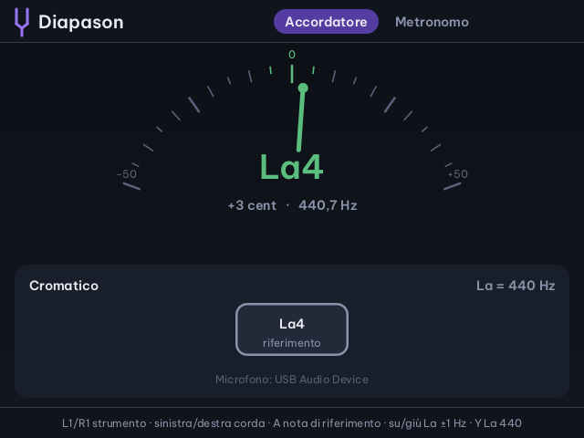
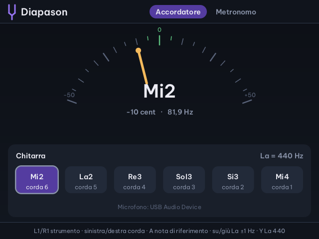
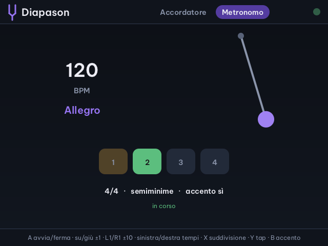
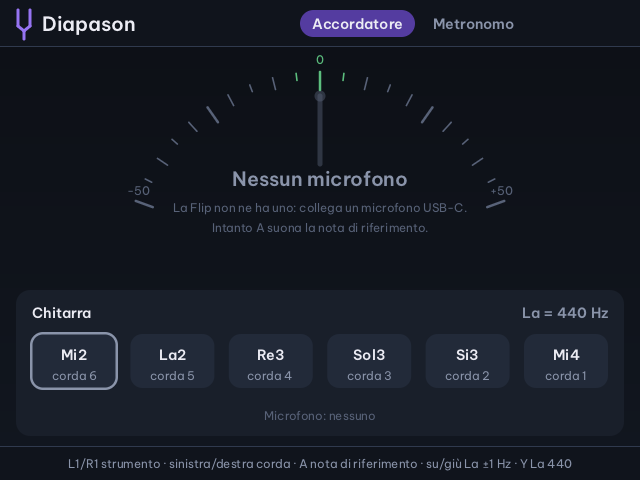

Cirmolo · app musicale per Miyoo Flip
Diapason
Accordatore, note di riferimento e metronomo nella console che hai già in tasca. L'accordatore riconosce la nota dal microfono e ti dice di quanti centesimi sei sopra o sotto; per chitarra, basso, ukulele e violino sceglie da solo la corda più vicina.
Nella Home di Cirmolo, sotto Musica. Le schermate vengono dal codice dell'app, compilato sul PC e ascoltando note sintetiche.

Accordatore
Una lancetta, tre colori
La lancetta va da −50 a +50 centesimi. Sotto la nota ci sono lo scarto in centesimi e la frequenza. Con uno strumento scelto, la corda riconosciuta si accende tra quelle in basso.

Verde entro 5 centesimi: sei intonato. Ambra fino a 15: ci sei quasi. Rosso oltre: gira la chiavetta.
- Cromaticoqualsiasi nota
- ChitarraMi2 La2 Re3 Sol3 Si3 Mi4
- Chitarra drop DRe2 La2 Re3 Sol3 Si3 Mi4
- BassoMi1 La1 Re2 Sol2
- UkuleleSol4 Do4 Mi4 La4
- ViolinoSol3 Re4 La4 Mi5
Pagina Accordatore
| L1 · R1 | accordatura precedente · successiva |
| Sinistra · destra | corda; in cromatico la nota di riferimento, da Do1 a Do7 |
| A | suona o spegne la nota di riferimento |
| Su · giù | La di riferimento, un hertz alla volta (400–480) |
| Y | rimette il La a 440 Hz |
In ogni pagina
| SELECT | passa tra Accordatore e Metronomo |
| START | avvia o ferma il metronomo, anche mentre accordi |
| MENU | esce (A o giù conferma); le scelte restano salvate |
Senza microfono si accorda a orecchio: A fa suonare la nota della corda scelta.
Metronomo
Il tempo, con il suo nome
Il pendolo oscilla a tempo, i quadrati contano i battiti della battuta e sotto i BPM compare il nome italiano del tempo: da Grave a Prestissimo.

Pagina Metronomo
| A | avvia o ferma |
| Su · giù | un BPM in più · in meno |
| L1 · R1 | dieci BPM in meno · in più |
| Sinistra · destra | battiti per battuta, da 1 a 12 |
| X | suddivisione: semiminime, crome, terzine, semicrome |
| Y | tap tempo: premilo a tempo |
| B | accento sul primo battito, sì o no |
Il microfono
La Flip non ha un microfono: collegane uno
Serve un microfono USB-C, o un adattatore USB-C con l'ingresso per il microfono. Diapason lo cerca da solo, anche ad app aperta, e ne scrive il nome sotto le corde. Il riconoscimento usa l'algoritmo YIN di de Cheveigné e Kawahara.

Accordare a orecchio
Scegli la corda con sinistra e destra e premi A: la nota di riferimento suona finché non la spegni.
Un La diverso
Orchestre e strumenti antichi usano anche 442 o 415 Hz: su e giù spostano il La da 400 a 480 Hz, e note e corde seguono.
File sulla scheda SD
Le scelte restano
Saves/diapason/stato.txtLa di riferimento, accordatura, corda, tempo, battiti, suddivisione e accentoSaves/spruce/diapason.logil registro dell'appApp/Diapason/srci sorgenti in C, con le prove su note sintetiche
Le altre app